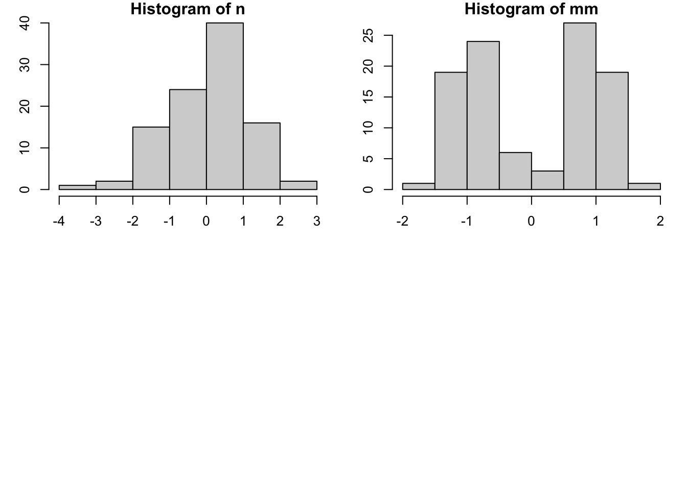

Lab 04: Distributions & Summary Statistics
CS631
Alison Hill
1 Overview
There are 10 challenges total- none are in the “continuous colors” section, but you can use that section to complete the tenth challenge on your own. Upload your knitted html document by next Wednesday at noon to Sakai!
2 Slides for today
knitr::include_url("slides/03-slides.html")3 Packages
Other packages will be needed to be installed as you go- reveal the first code chunks when in doubt!
library(tidyverse)4 Read in the data
Use this code chunk to read in the data available at http://bit.ly/cs631-meow:
sounds <- read_csv("http://bit.ly/cs631-meow")Or store it locally:
sounds <- read_csv(here::here("data", "animal_sounds_summary.csv"))Error in loadNamespace(name): there is no package called 'here'Below are simulated four distributions (n = 100 each), all with similar measures of center (mean = 0) and spread (s.d. = 1), but with distinctly different shapes.
- A standard normal (
n); - A skew-right distribution (
s, Johnson distribution with skewness 2.2 and kurtosis 13); - A leptikurtic distribution (
k, Johnson distribution with skewness 0 and kurtosis 30); - A bimodal distribution (
mm, two normals with mean -0.95 and 0.95 and standard deviation 0.31).
#install.packages("SuppDists")
#library(SuppDists)
# this is used later to generate the s and k distributions
findParams <- function(mu, sigma, skew, kurt) {
value <- .C("JohnsonMomentFitR", as.double(mu), as.double(sigma),
as.double(skew), as.double(kurt - 3), gamma = double(1),
delta = double(1), xi = double(1), lambda = double(1),
type = integer(1), PACKAGE = "SuppDists")
list(gamma = value$gamma, delta = value$delta,
xi = value$xi, lambda = value$lambda,
type = c("SN", "SL", "SU", "SB")[value$type])
}# Generate sample data -------------------------------------------------------
set.seed(141079)
# normal
n <- rnorm(100)
# right-skew
s <- rJohnson(100, findParams(0, 1, 2.2, 13))Error in .C("JohnsonMomentFitR", as.double(mu), as.double(sigma), as.double(skew), : "JohnsonMomentFitR" not available for .C() for package "SuppDists"# leptikurtic
k <- rJohnson(100, findParams(0, 1, 0, 30))Error in .C("JohnsonMomentFitR", as.double(mu), as.double(sigma), as.double(skew), : "JohnsonMomentFitR" not available for .C() for package "SuppDists"# mixture
mm <- rnorm(100, rep(c(-1, 1), each = 50) * sqrt(0.9), sqrt(0.1))Let’s see what our descriptive statistics look like:
four_wide <- data.frame(cbind(n, s, k, mm))Error in cbind(n, s, k, mm): object 'k' not foundpsych::describe(four_wide)Error in psych::describe(four_wide): object 'four_wide' not foundWhat do you notice? For which distributions are the standard measures of central tendency, spread, and shape more accurate?
5 Histograms
What you want to look for:
- How many “mounds” do you see? (modality)
- If 1 mound, find the peak: are the areas to the left and right of the peak symmetrical? (skewness)
- Notice that kurtosis (peakedness) of the distribution is difficult to judge here, especially given the effects of differing binwidths.
5.1 Base R: hist()
#2 x 2 histograms in base r graphics
par(mar = c(3.0, 3.0, 1, 1))
par(mfrow=c(2,2))
hist(n)
hist(s)Error in hist.default(s): 'x' must be numerichist(k)Error in hist(k): object 'k' not foundhist(mm)
What makes these histograms difficult to compare? A few things:
- Differing y-axes
- Differing x-axes
- Differing bin size
6 Boxplots (medium to large N)
What you want to look for:
- The center line is the median: does the length of the distance to the upper hinge appear equal to the length to the lower hinge? (symmetry/skewness: Q3 - Q2/Q2 - Q1)
- Are there many outliers?
- Notice that modality of the distribution is difficult to judge here.
6.1 Base R: boxplot()
Note that if varwidth is TRUE, the boxes are drawn with widths proportional to the square-roots of the number of observations in the groups. It doesn’t matter here since all 4 distributions contain 100 values.
#Just Boxplot
par(mar = c(2.1, 2.1, .1, .1))
boxplot(vals ~ dist,
data = four,
ylim = c(-4,4),
varwidth = TRUE) #vary width by nError in eval(m$data, parent.frame()): object 'four' not found7 Univariate scatterplots (small to medium n)
Options:
- Stripchart: “one dimensional scatter plots (or dot plots) of the given data. These plots are a good alternative to boxplots when sample sizes are small.”
- Beeswarm: “A bee swarm plot is a one-dimensional scatter plot similar to ‘stripchart’, except that would-be overlapping points are separated such that each is visible.”
7.1 Base R: stripchart()
par(mar = c(2.1, 2.1, .1, .1))
stripchart(vals ~ dist,
data = four,
pch = 16,
ylim = c(-4,4),
method = "jitter",
vertical = TRUE,
col = rgb(32, 178, 170, 100, max = 255))Error in eval(m$data, parent.frame()): object 'four' not foundFrom statmethods.net: You can use the col2rgb() function to get the rbg values for R colors. For example, col2rgb("lightseagreen") yeilds r = 32, g = 178, b = 170. Then add the alpha transparency level as the 4th number in the color vector. Alpha values range from 0 (fully transparent) to 255 (opaque). You must also specify max = 255. See help(rgb) for more information.
7.2 Beeswarm package: beeswarm()
# install.packages("beeswarm")
# library(beeswarm)
#par(mfrow = c(1,1))
par(mar = c(2.1, 2.1, .1, .1))
beeswarm(vals ~ dist,
data = four,
pch = 20,
col="lightseagreen",
ylim=c(-4,4))Error in eval(m$data, parent.frame()): object 'four' not foundNote that these recommendations do not apply if your data is “big”. You will know your data is too big if you try the below methods and you can’t see many of the individual points (typically, N > 100).
8 Boxplots + univariate scatterplots (small to medium n)
8.1 Base R plus beeswarm package: boxplot(), beeswarm(add = TRUE)
#install.packages("beeswarm")
#library(beeswarm)
par(mar = c(2.1, 2.1, .1, .1))
boxplot(vals ~ dist, #make the boxplot first
data = four,
outline = FALSE, #avoid double-plotting outliers-beeswarm will plot them too
ylim = c(-4, 4)) Error in eval(m$data, parent.frame()): object 'four' not foundbeeswarm(vals ~ dist,
data = four,
pch = 20,
col = "lightseagreen",
ylim = c(-4, 4),
add = TRUE) #this is how you layer on top of the boxplotError in eval(m$data, parent.frame()): object 'four' not found8.2 Base R: boxplot(), stripchart(add = TRUE)
par(mar = c(2.1, 2.1, .1, .1))
boxplot(vals ~ dist, #make the boxplot first
data = four,
outline = FALSE, #avoid double-plotting outliers-beeswarm will plot them too
ylim = c(-4, 4)) Error in eval(m$data, parent.frame()): object 'four' not foundstripchart(vals ~ dist,
data = four,
vertical = TRUE,
method = "jitter",
pch = 16,
add = TRUE,
ylim = c(-4, 4),
col = rgb(32, 178, 170, 100, max = 255))Error in eval(m$data, parent.frame()): object 'four' not found9 Density plots (medium to large n)
A few ways to do this:
- Kernel density: “Kernel density estimation (KDE) is a non-parametric way to estimate the probability density function of a random variable. Kernel density estimation is a fundamental data smoothing problem where inferences about the population are made, based on a finite data sample.” - from wikipedia
- Violin plots: “This function serves the same utility as side-by-side boxplots, only it provides more detail about the different distribution. It plots violinplots instead of boxplots. That is, instead of a box, it uses the density function to plot the density. For skewed distributions, the results look like”violins“. Hence the name.”
- Some violin plots also include the boxplot so you can see Q1/Q2/Q3.
- Beanplots: “The name beanplot stems from green beans. The density shape can be seen as the pod of a green bean, while the scatter plot shows the seeds inside the pod.”
9.1 Vioplot package: vioplot()
Includes equivalent of boxplot.
#install.packages("vioplot")
#library(vioplot)
par(mar = c(2.1, 2.1, .1, .1))
with(four, vioplot(vals[dist == "n"],
vals[dist == "s"],
vals[dist == "k"],
vals[dist == "mm"],
horizontal = FALSE,
names = c("n", "s", "k", "mm"),
col = "lightseagreen",
ylim = c(-4, 4)))Error in with(four, vioplot(vals[dist == "n"], vals[dist == "s"], vals[dist == : object 'four' not found9.2 Beanplot package: beanplot()
The default beanlines for each bean is the mean- you can also use the median or quantiles. The default overallline is the mean, again you can use the median instead.
#install.packages("beanplot")
#library(beanplot)
par(mar = c(2.1, 2.1, .1, .1))
beanplot(vals ~ dist,
data = four,
ylim = c(-4, 4),
method = "jitter", #handling overlapping beans
col = c("lightblue", "lightseagreen", "lightseagreen"),
border = "lightblue")Error in FUN(X[[i]], ...): object 'four' not found